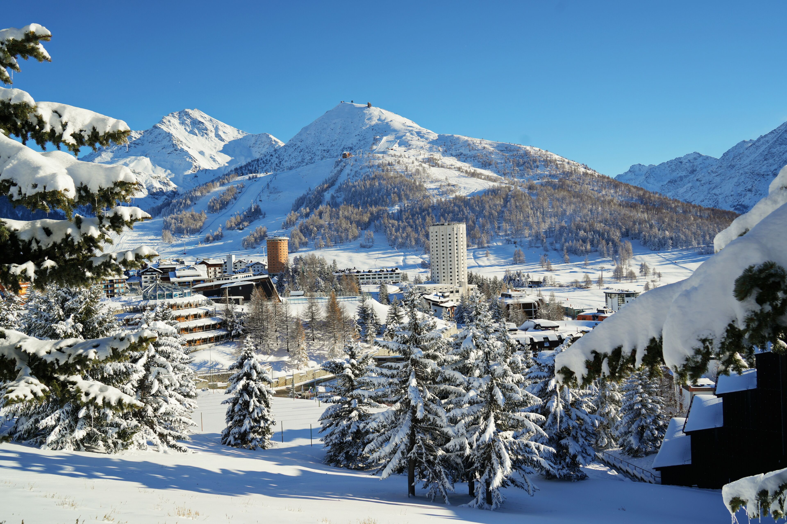

Explore ski resorts in Italy

Sauze D'Oulx
A lively après-ski hotspot, restaurants for every mood and access to five ski resorts.

Sestriere
Sestriere is a high-altitude ski resort and comune at 2,035 metres in the Metropolitan City of Turin, Piedmont, Italy